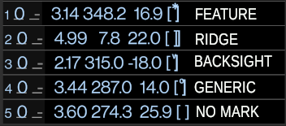
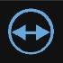

The splay marks are distinguished by the closing bracket:
no mark (plain square bracket) feature (a upper star), ridge (a double bracket)
backsight (a down arrow), and generic (a upper circle).

By default the index is the index of the shot in the survey. There is a setting to use the BRIC shot-index instead.
The shot survey-index is guaranteed to be unique. The BRIC index is not unique because the BRIC memory can be reset.
Blank shots, and repeated-legs can be hidden. Splay shots can also be hidden to unclutter the list of shots. However, even if splays are not shown, you can see those at a station by tapping on the station name in a leg shot. To hide them tap again on the station name (even a tap on the name in a splay will do).
TopoDroid can set the station names automatically according to the station assignment policy.
Shot item taps
If you use TopoDroid automatic station naming, you are likely to need the shot dialog only to enter the comment, and to change the "extend" direction. These two actions can be done also from the Drawing window, by selecting the shot in "edit" mode [A] and picking the Note button. The extend can be changed also graphically on the sketch. These actions are described in the section on the Drawing window.
Multi-shot selection
The selected shots have a gray background (possibly only in the back of the stations).
Tapping a shot adds/removes it from the selection.
Subsequent long-taps either select or de-select all entries from the previously selected or de-selected shot to the current one.
In multishot selection, the last tapped shot stations are highlighted in light yellow.
The number of shots in the selection is displayed in the title bar within angle brackets.
The button bar changes to the buttons for the multi-shot actions:

flip the shots extend